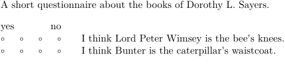

Syntax
| \its[ref,ref,...] | |
| [ref,ref,...] | |
Description
In an itemization, place an item together with a row of bullets — think questionnaires with five-point scales. Usually used with \startitemize[5] to have the bullet points be open circles. The number of points in the row is specified with items=n.
The references are for interactive documents: clicking an item in the scale will then trigger the corresponding reference/action.
Example
-
A short questionnaire about the books of Dorothy L. Sayers. \startitemize [5, % open circles packed] % no blank lines between items (counteracts \setupwhitespace[big]) [width=6em, % width of area in which bullets/numbers/scales are placed distance=2em, % distance between last scale point and item items=4] % number of points in scale % First we print a range key \ran{yes \hss no} % \hss produces an infinitely stretchable (and squashable) space \its I think Lord Peter Wimsey is the bee's knees. \its I think Bunter is the caterpillar's waistcoat. \stopitemize
- 
See also
Help from ConTeXt-Mailinglist/Forum
All issues with: